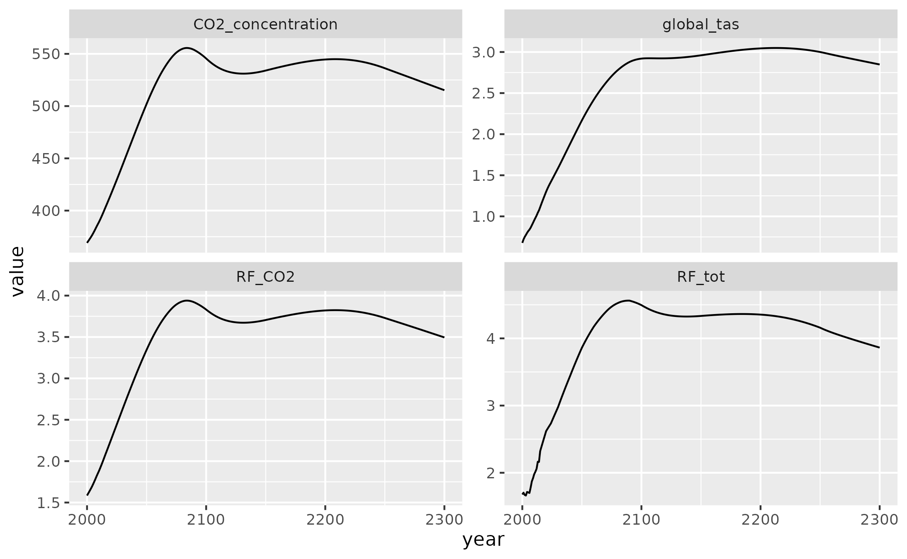
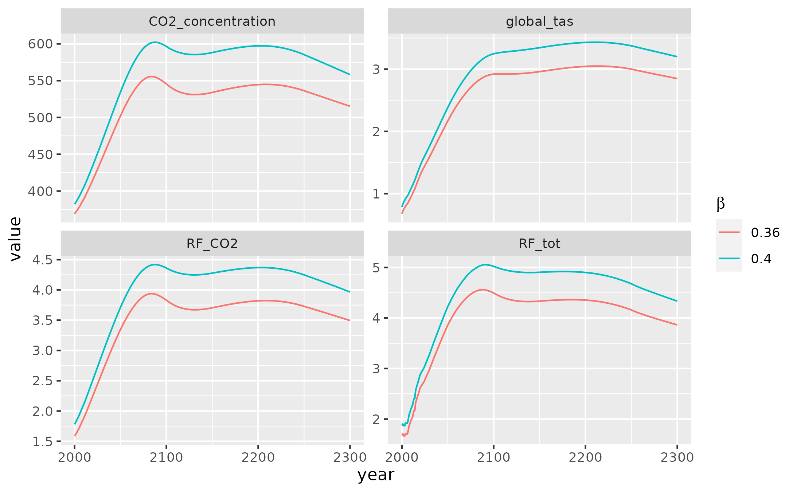
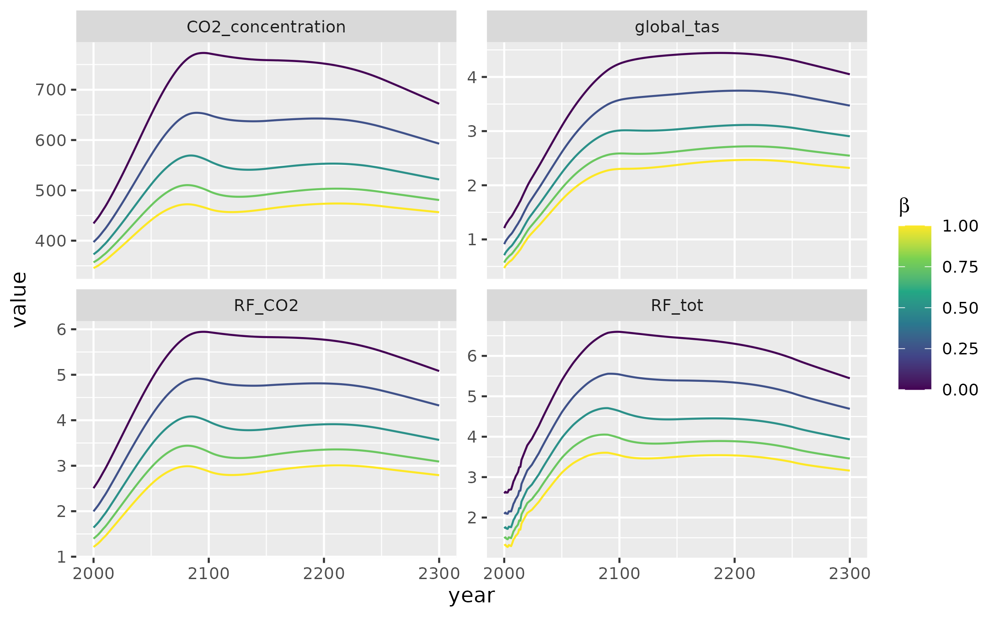

This vignette provides a basic introduction for running Hector with R, assuming that Hector is already installed. First, it shows how to do a simple Hector run with a built-in scenario. It then demonstrates how to modify Hector parameters from within R to perform a simple sensitivity analysis of how the CO\(_2\) fertilization parameter \(\beta\) affects several Hector output variables.
Basic run
First, load the hector package.
Hector is configured via an INI file, which defines run metadata, inputs (e.g., emissions scenarios), and parameters. For details on this file, see InputFiles.
These files ship with the Hector R package in the input/
subdirectory, which allows them to be accessed via
system.file. First, determine the path of the input file
(ini) corresponding to the scenario SPP245.
ini_file <- system.file("input/hector_ssp245.ini", package = "hector")Alternatively, users may provide a path to an ini file external to the Hector package on their local machine. This file must comply with the Hector ini requirements.
external_ini_file <- "/path/to/ini/on/local/machine/my_ini.ini"Next, we initialize a Hector instance, or “core”, using this
configuration. This core is a self-contained object that contains
information about all of Hector’s inputs and outputs. The core is
initialized via the newcore function:
core <- newcore(ini_file)
core## Hector core: Unnamed Hector core
## Start date: 1745
## End date: 2300
## Current date: 1745
## Input file: /home/runner/work/_temp/Library/hector/input/hector_ssp245.iniNow that we have configured a Hector core, we can run it with the
run function.
run(core)## Hector core: Unnamed Hector core
## Start date: 1745
## End date: 2300
## Current date: 2300
## Input file: /home/runner/work/_temp/Library/hector/input/hector_ssp245.iniNotice that this itself returns no output. Instead, the output is
stored inside the core object. To retrieve it, we use the
fetchvars() function. Below, we also specify that we want
to retrieve results from 2000 to 2300.
## scenario year variable value units
## 1 Unnamed Hector core 2000 CO2_concentration 369.0965 ppmv CO2
## 2 Unnamed Hector core 2001 CO2_concentration 370.8101 ppmv CO2
## 3 Unnamed Hector core 2002 CO2_concentration 372.4475 ppmv CO2
## 4 Unnamed Hector core 2003 CO2_concentration 374.1880 ppmv CO2
## 5 Unnamed Hector core 2004 CO2_concentration 375.9842 ppmv CO2
## 6 Unnamed Hector core 2005 CO2_concentration 378.0061 ppmv CO2The results are returned as a long data.frame. This
makes it easy to plot them using ggplot2.
library(ggplot2)
ggplot(results) +
aes(x = year, y = value) +
geom_line() +
facet_wrap(~variable, scales = "free_y")
By default, fetchvars() returns the four outputs shown
above – atmospheric CO\(_2\)
concentration, CO\(_2\) radiative
forcing, total radiative forcing, and temperature change – but any model
output(s) can be specified.
Setting parameters
The Hector R interface interacts with parameters and variables in the
same way. Therefore, the variables can be set and checked via
setvar() and fetchvars().
First, let’s get the current value of \(\beta\) (beta), the CO\(_2\) fertilization factor. Because
variables and parameter names have to be retrieved from the Hector core,
they are stored as R functions (e.g. BETA()). However,
these functions return a string corresponding to the variable name.
BETA()## [1] "beta"Just as we did to load results, we use fetchvars() to
query parameter values.
## scenario year variable value units
## 1 Unnamed Hector core NA beta 0.55 (unitless)The result of fetchvars() is always a
data.frame with the same columns, even when returning a
parameter value. Note also the use of NA in the second
argument (dates).
The current value is set to 0.36 (note that it is a unitless
quantity, hence the (unitless) unit). Let’s bump it up a
little to 0.40.
Similarly to run, this returns no output. Rather, the
change is stored inside the Hector “core” object. We can confirm that
our change took effect with another call to
fetchvars().
## scenario year variable value units
## 1 Unnamed Hector core NA beta 0.4 (unitless)Now, let’s run the simulation again with a higher value for CO\(_2\) fertilization. But, before we do,
let’s look once again at the Hector core object.
core## Hector core: Unnamed Hector core
## Start date: 1745
## End date: 2300
## Current date: 2300
## Input file: /home/runner/work/_temp/Library/hector/input/hector_ssp245.iniNotice that Current date is set to 2300. This is because
we have already run this core to its end date. The ability to stop and
resume Hector runs with the same configuration, possibly with adjusting
values of certain variables while stopped, is an essential part of the
model’s functionality. But, it’s not something we’re interested in here.
We have already stored the previous run’s output in results
above, so we can safely reset the core:
reset(core)## Hector core: Unnamed Hector core
## Start date: 1745
## End date: 2300
## Current date: 1745
## Input file: /home/runner/work/_temp/Library/hector/input/hector_ssp245.iniThis effectively ‘rewinds’ the core back to either the provided
date (defaults to 0 if missing) or the model start date
(set in the INI file; default is 1745), whichever is greater. In
addition, if the date argument is less than the model start
date and spinup is enabled (do_spinup = 1 in the INI file),
then the core will re-do its spinup process with the current set of
parameters.
NOTE
Prior to a normal run beginning in 1745, Hector has an optional “spinup” mode where it runs the carbon cycle with no perturbations until it stabilizes. Essentially, the model removes human emissions and runs until there are no more changes in the carbon pools and the system has reached equilibrium.
Because changing Hector parameters can change the post-spinup
equilibrium values of state variables, Hector will automatically run
reset(core, date = 0) at the beginning of the next
run call if it detects that any of its parameters have
changed. This means that it is not currently possible to change Hector
parameters (such as \(\beta\)
or preindustrial CO2) part-way through a run. However, it is
still possible to change the values of specific drivers and
state variables (such as the CO2 emissions) in the
middle of a run.
So, as a result of the reset command, the core’s
Current Date is now the model start date – 1745. We can now
perform another run with the new CO\(_2\) fertilization value.
run(core)## Hector core: Unnamed Hector core
## Start date: 1745
## End date: 2300
## Current date: 2300
## Input file: /home/runner/work/_temp/Library/hector/input/hector_ssp245.ini## scenario year variable value units
## 1 Unnamed Hector core 2000 CO2_concentration 382.0691 ppmv CO2
## 2 Unnamed Hector core 2001 CO2_concentration 384.0710 ppmv CO2
## 3 Unnamed Hector core 2002 CO2_concentration 386.0025 ppmv CO2
## 4 Unnamed Hector core 2003 CO2_concentration 388.0425 ppmv CO2
## 5 Unnamed Hector core 2004 CO2_concentration 390.1443 ppmv CO2
## 6 Unnamed Hector core 2005 CO2_concentration 392.4753 ppmv CO2Let’s see how changing the CO\(_2\) fertilization affects our results.
results[["beta"]] <- 0.36
results_40[["beta"]] <- 0.40
compare_results <- rbind(results, results_40)
ggplot(compare_results) +
aes(x = year, y = value, color = factor(beta)) +
geom_line() +
facet_wrap(~variable, scales = "free_y") +
guides(color = guide_legend(title = expression(beta)))
As expected, increasing CO\(_2\) fertilization increases the strength of the terrestrial carbon sink and therefore reduces atmospheric CO\(_2\), radiative forcing, and global temperature. However, the effects only become pronounced in the latter half of the 21st century.
Sensitivity analysis
Hector runs quickly, making it easy to run many simulations under slightly different configurations. One application of this is to explore the sensitivity of Hector to variability in its parameters.
The basic procedure for this is the same as in the previous section. However, to save typing (and, in general, to be good programmers!), let’s create some functions.
#' Run Hector with a parameter set to a particular value, and return results
#'
#' @param core Hector core to use for execution
#' @param parameter Hector parameter name, as a function call (e.g. `BETA()`)
#' @param value Parameter value
#' @return Results, as data.frame, with additional `parameter_value` column
run_with_param <- function(core, parameter, value) {
setvar(core, NA, parameter, value, getunits(parameter))
reset(core)
run(core)
result <- fetchvars(core, 2000:2300)
result[["parameter_value"]] <- value
result[["parameter_units"]] <- getunits(parameter)
result
}
#' Run Hector with a range of parameter values
run_with_param_range <- function(core, parameter, values) {
mapped <- Map(function(x) run_with_param(core, parameter, x), values)
Reduce(rbind, mapped)
}
sensitivity_beta <- run_with_param_range(core, BETA(), seq(0, 1, length.out = 5))
ggplot(sensitivity_beta) +
aes(x = year, y = value, color = parameter_value, group = parameter_value) +
geom_line() +
facet_wrap(~variable, scales = "free_y") +
guides(color = guide_colorbar(title = expression(beta))) +
scale_color_viridis_c()
As we can see, the ability of CO\(_2\) fertilization to offset carbon emissions saturates, at high values of \(\beta\), the same increase in \(\beta\) translates into a smaller decrease in atmospheric CO\(_2\) and related climate effects.